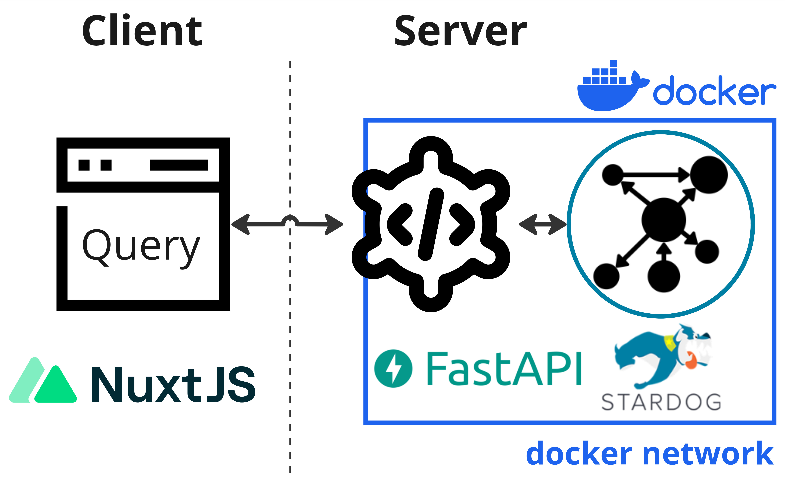
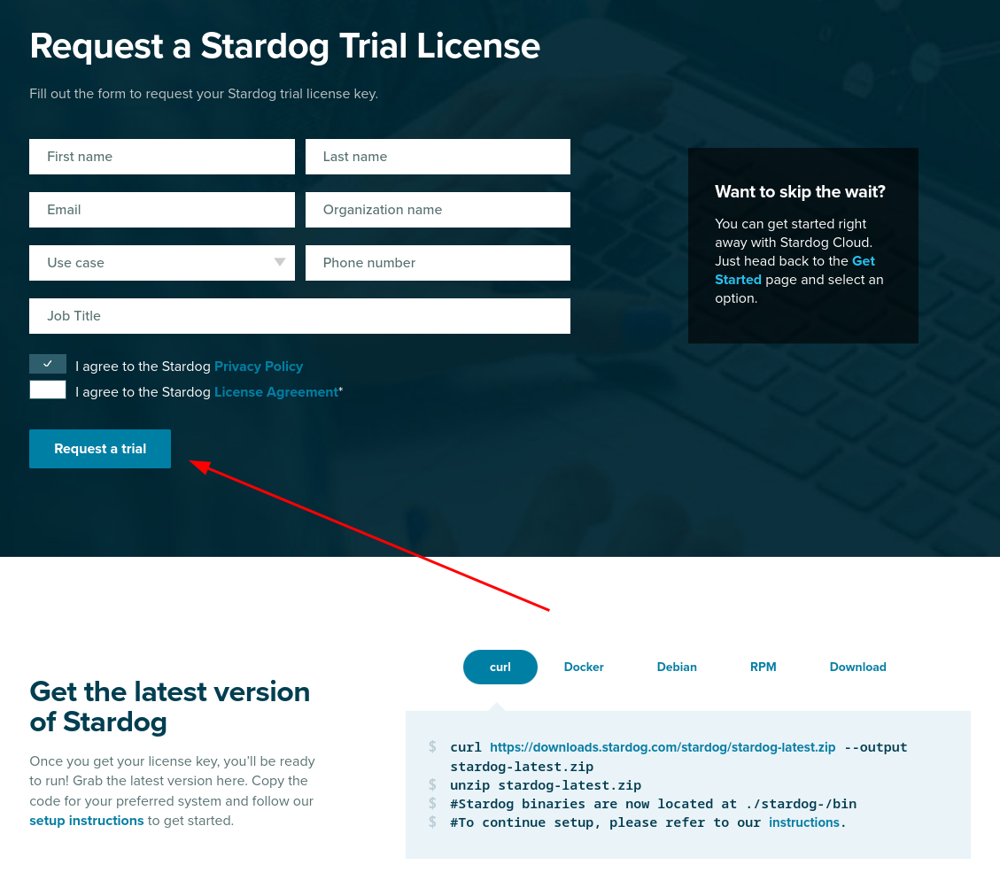

Set up a neurobagel node
These instructions are for a sysadmin looking to deploy a new Neurobagel node locally in an institute or lab. A local neurobagel node includes the neurobagel node API and a graph backend to store the harmonized metadata.
To make searching the neurobagel node easier, you can optionally also set up a locally hosted graphical query interface.

Neurobagel uses RDF-triple stores as graph backends. Because RDF is an W3C open standard, any RDF store can be theoretically used as a backend. We have tested the following options:
Note: Stardog instructions are deprecated
Due to Stardog no longer offering free academic licenses for self-hosted graph instances (required for Neurobagel), we have deprecated it as a viable graph backend for new Neurobagel nodes. Deployment instructions using Stardog are shown below for legacy reasons, but please ensure to follow the GraphDB instructions.
GraphDB offers a free perpetual license that should be sufficient for most smaller deployments or testing deployments. This free license is created automatically when you don't explicitly provide a license.
The free edition mostly offers the same features as the paid versions, but restricts the number of concurrent operations on the graph to 2.
We recommend using GraphDB if these restrictions are not a blocker.
Note
You do not need to download GraphDB from the official website for the setup steps below.
Note: Stardog no longer provides free academic licenses. The below instructions are deprecated and shown only for legacy reasons.
Stardog is a very performant RDF store with a large number of extensions. However, it has a very restrictive license. We therefore do not recommend Stardog for most deployments or testing.
Stardog has a free, annually renewable license for academic use. In order to make a separate deployment of Neurobagel, you should therefore first request your own Stardog license. You can request a Stardog license here:
https://www.stardog.com/license-request/
Don't pick the wrong license
Stardog is a company that offers their graph store solutions both as a self-hosted, downloadable tool (what we want) and as a cloud hosted subscription model (what we do not want). Both tiers offer free access and the website has a tendency to steer you towards the cloud offering. Make sure you request a license key for Stardog.

The Stardog license is typically automatically granted via email in 24 hours.
The license you receive will be a downloadable file. It is valid for one year and for a major version of Stardog. You will need to download the license in a place that is accessible to your new Stardog instance when it is launched (see below).
Launch the Neurobagel node API and graph stack
We recommend launching the Neurobagel API and your graph backend instance using docker compose.
(To install the API from source, see these instructions.)
Clone the configuration file templates
The neurobagel/recipes repository contains templates of all files needed for configuring different types of Neurobagel deployments.
Configuration files for setting up a single Neurobagel node are found in the local_node subdirectory.
git clone https://github.com/neurobagel/recipes.git
cd recipes/local_node
You can follow the next steps directly in this subdirectory, or in a new directory outside of the recipes repository.
Set the environment variables
Create a .env file to house the environment variables used by the Neurobagel API-graph network.
The neurobagel/recipes repo contains a
template.env
in the local_node recipe
to get you started. Copy and rename this file to .env and then edit it as needed.
Below are all the possible Neurobagel environment variables that can be set in .env.
| Environment variable | Required in .env? | Description | Default value if not set | Relevant installation mode(s) |
|---|---|---|---|---|
NB_GRAPH_USERNAME |
Yes | Username to access graph database that API will communicate with | - | Docker, Python |
NB_GRAPH_PASSWORD |
Yes | Password to access graph database that API will communicate with | - | Docker, Python |
NB_GRAPH_ADDRESS |
No | IP address for the graph database (or container name, if graph is hosted locally) | 206.12.99.17 (graph) ** |
Docker, Python |
NB_GRAPH_DB |
No | Name of graph database endpoint to query (e.g., for a GraphDB database, this will take the format of repositories/{database_name}) |
repositories/my_db |
Docker, Python |
NB_RETURN_AGG |
No | Whether to return only dataset-level query results (including data locations) and exclude subject-level attributes. One of [true, false] | true |
Docker, Python |
NB_API_TAG |
No | Docker image tag for the API | latest |
Docker |
NB_API_PORT_HOST |
No | Port number on the host machine to map the API container port to | 8000 |
Docker |
NB_API_PORT |
No | Port number on which to run the API | 8000 |
Docker, Python |
NB_API_ALLOWED_ORIGINS |
Yes, if using a frontend query tool ‡ | Origins allowed to make cross-origin resource sharing requests. Multiple origins must be separated with spaces in a single string enclosed in quotes. See ‡ for more info | "" |
Docker, Python |
NB_GRAPH_IMG |
No | Graph server Docker image | ontotext/graphdb:10.3.1 |
Docker |
NB_GRAPH_ROOT_HOST |
No | Path to directory on the host machine to store graph database files and data (the directory does not have to exist beforehand). | ~/graphdb-home |
Docker |
NB_GRAPH_ROOT_CONT |
No | Path to directory for graph databases in the graph server container | /opt/graphdb/home * |
Docker |
NB_GRAPH_PORT_HOST |
No | Port number on the host machine to map the graph server container port to | 7200 |
Docker, Python |
NB_GRAPH_PORT |
No | Port number used by the graph server container | 7200 * |
Docker |
NB_QUERY_TAG |
No | Docker image tag for the query tool | latest |
Docker |
NB_QUERY_PORT_HOST |
No | Port number used by the query_tool on the host machine |
3000 |
Docker |
NB_API_QUERY_URL |
Yes, unless default is correct | URL of the API that the query tool will send its requests to. The port number in the URL must correspond to NB_API_PORT_HOST. See also the query tool README. Must end in a forward slash /! |
http://localhost:8000/ |
Docker |
* These defaults are configured for a GraphDB backend - you should not have to change them if you are running a GraphDB backend.
* These values will have to be changed for your deployment from their default value:
Change the following default values in your .env file for a Stardog deployment!
NB_GRAPH_IMG=stardog/stardog:8.2.2-java11-preview
NB_GRAPH_ROOT_CONT=/var/opt/stardog
NB_GRAPH_ROOT_HOST=~/stardog-home # Or, replace with another directory on your own (host) system where you want to store the database files
NB_GRAPH_PORT=5820
NB_GRAPH_PORT_HOST=5820
NB_GRAPH_DB=test_data/query # For Stardog, this value should always take the format of: <database_name>/query
Your Stardog license file must be in the right directory
Note that your Stardog license file must be in the directory specified by NB_GRAPH_ROOT_HOST (default ~/stardog-home).
** NB_GRAPH_ADDRESS should not be changed from its default value (graph) when using docker compose as this corresponds to the preset container name of the graph database server within the docker compose network.
‡ See section Deploy a graphical query tool
For a local deployment, we recommend to explicitly set at least the following variables in .env
(note that NB_GRAPH_USERNAME and NB_GRAPH_PASSWORD must always be set):
NB_GRAPH_USERNAME
NB_GRAPH_PASSWORD
NB_GRAPH_DB
NB_GRAPH_IMG
NB_RETURN_AGG
NB_API_ALLOWED_ORIGINS
Ensure that shell variables do not clash with .env file
If the shell you run docker compose from already has any
shell variable of the same name set,
the shell variable will take precedence over the configuration
of .env!
In this case, make sure to unset the local variable first.
For more information, see Docker's environment variable precedence.
Docker Compose
To spin up the Neurobagel API and graph backend containers using Docker Compose, ensure that both docker and docker compose are installed.
Run the following in the directory containing both the docker-compose.yml file from the local_nodes recipe and the .env file you just created.
Tip
Double check that any environment variables you have customized in .env are resolved with your expected values using the command docker compose config.
docker compose up -d
docker compose pull && docker compose up -d
Setup for the first run
When you launch the graph backend for the first time, there are a couple of setup steps that need to be done. These will not have to be repeated for subsequent starts.
The recipes repo you cloned contains a script graphdb_setup.sh which runs the first-time setup steps automatically for GraphDB.
Run the script as follows
(assuming you are in the recipes/scripts directory):
./graphdb_setup --env-file-path /PATH/TO/.env "NewAdminPassword"
Make sure to replace:
/PATH/TO/.envwith the path to the.envfile you created in the step Set the environment variables"NewAdminPassword"with a secure password of your choice
The script will:
-
Set the password of the default
adminsuperuser and enable password-based access to databasesDetails
When you first launch the graph server, a default
adminuser with superuser privilege will automatically be created for you. Thisadminuser is meant to create other database users and modify their permissions. (For more information, see the official GraphDB documentation.)Doing this manually with
curlFirst, change the password for the admin user that has been automatically created by GraphDB:
(make sure to replacecurl -X PATCH --header 'Content-Type: application/json' http://localhost:7200/rest/security/users/admin -d ' {"password": "NewAdminPassword"}'"NewAdminPassword"with your own, secure password).Next, enable GraphDB security to only allow authenticated users access:
curl -X POST --header 'Content-Type: application/json' -d true http://localhost:7200/rest/securityand confirm that this was successful:
➜ curl -X GET http://localhost:7200/rest/security true -
Create a new graph database user based on credentials defined in your
.envfileDetails
We do not recommend using
adminfor normal read and write operations, instead we can create a regular database user.The
.envfile created as part of thedocker composesetup instructions declares theNB_GRAPH_USERNAMEandNB_GRAPH_PASSWORDfor the database user. The Neurobagel API will send requests to the graph using these credentials.Doing this manually with
curlWhen you launch the RDF store for the first time, we have to create a new database user:
curl -X POST --header 'Content-Type: application/json' -u "admin:NewAdminPassword" -d ' { "username": "DBUSER", "password": "DBPASSWORD" }' http://localhost:7200/rest/security/users/DBUSERMake sure to use the exact
NB_GRAPH_USERNAMEandNB_GRAPH_PASSWORDyou defined in the.envfile when creating the new database user. Otherwise the Neurobagel API will not have the correct permission to query the graph. -
Create a new graph database with the name defined in your
.envDetails
When you first launch the graph store, there are no graph databases. You have to create a new one to store your metadata.
By default the Neurobagel API will query a graph database named
my_db. If you have defined a customNB_GRAPH_DBname in the.envfile, you will first need to create a database with a matching name.Doing this manually with
curlIn GraphDB, graph databases are called resources. To create a new one, you will also have to prepare a
data-config.ttlfile that contains the settings for the resource you will create (for more information, see the GraphDB docs).You can edit this example file and save it as
data-config.ttllocally. Ensure the value forrep:repositoryIDindata-config.ttlmatches the value inNB_GRAPH_DBin your.envfile. For example, ifNB_GRAPH_DB=repositories/my_db, thenrep:repositoryID "my_db" ;.Then, create a new graph database with the following command (replace "my_db" as needed). If your
data-config.ttlis not in the current directory, replace"@data-config.ttl"in the command with"@PATH/TO/data-config.ttl".curl -X PUT -u "admin:NewAdminPassword" http://localhost:7200/repositories/my_db --data-binary "@data-config.ttl" -H "Content-Type: application/x-turtle" -
Grant the newly created user from step 2 permissions to access the database
Doing this manually with
curlcurl -X PUT --header 'Content-Type: application/json' -d ' {"grantedAuthorities": ["WRITE_REPO_my_db","READ_REPO_my_db"]}' http://localhost:7200/rest/security/users/DBUSER -u "admin:NewAdminPassword""WRITE_REPO_my_db": Grants write permission."READ_REPO_my_db": Grants read permission.
Make sure you replace
my_dbwith the name of the graph db you have just created.
If the script has run all steps successfully, you should see:
Done.
You can now proceed to the section Uploading data to the graph.
Non-automated options for interacting with the GraphDB backend
- Directly send HTTP requests to the HTTP REST endpoints of the GraphDB backend
e.g. using
curl. GraphDB uses the RDF4J API specification. - Use the GraphDB web interface (called the Workbench), which offers a more accessible way to manage the GraphDB instance. Once your local GraphDB backend is running you can connect to the Workbench at http://localhost:7200. The Workbench is well documented on the GraphDB website.
Note: Stardog has been deprecated as a supported Neurobagel graph backend.
Updating your graph backend configuration
Updating existing database user permissions
If you want to change database access permissions (e.g., adding or removing access to a database) for an existing user in your GraphDB instance, you must do so manually.
Of note, in GraphDB, there is no straightforward REST API call to update a user's database access permissions without replacing the list of their existing database permissions ("grantedAuthorities") entirely.
Tip
You can verify a user's settings at any time with the following:
curl -u "admin:NewAdminPassword" http://localhost:7200/rest/security/users/DBUSER
Example: if user DBUSER was granted read/write access to database my_db1 with the following command
(this command is run by default as part of graphdb_setup.sh):
curl -X PUT --header 'Content-Type: application/json' -d '
{"grantedAuthorities": ["WRITE_REPO_my_db","READ_REPO_my_db"]}' http://localhost:7200/rest/security/users/DBUSER -u "admin:NewAdminPassword"
To grant DBUSER read/write access to a second database my_db2 (while keeping the existing access to my_db1),
you would rerun the above curl command with all permissions (existing and new) specified since the existing permissions list will be overwritten:
curl -X PUT --header 'Content-Type: application/json' -d '
{"grantedAuthorities": ["WRITE_REPO_my_db1","READ_REPO_my_db1", "WRITE_REPO_my_db2","READ_REPO_my_db2"]}' http://localhost:7200/rest/security/users/DBUSER -u "admin:NewAdminPassword"
Similarly, to revoke my_db1 access so DBUSER only has access to my_db2:
curl -X PUT --header 'Content-Type: application/json' -d '
{"grantedAuthorities": ["WRITE_REPO_my_db2","READ_REPO_my_db2"]}' http://localhost:7200/rest/security/users/DBUSER -u "admin:NewAdminPassword"
Managing user permissions using the GraphDB Workbench
If you are managing multiple GraphDB databases, the web-based administration interface for a GraphDB instance, the Workbench, might be an easier way to manage user permissions than the REST API. More information on using the GraphDB Workbench can be found here.
Resetting your GraphDB instance
If you previously set up a Neurobagel node on your machine but want to reset your graph database to start again from scratch, the most foolproof way would be to start with a clean GraphDB configuration to avoid conflicts with any previously created credentials or databases.
Some examples of when you might want to do this:
- You started but did not complete Neurobagel node setup previously and want to ensure you are using up-to-date instructions and recommended configuration options
- Your local node has stopped working after a configuration change to your graph database (e.g., your Neurobagel node API no longer starts or responds with an error, but you have confirmed all environment variables you have set should be correct)
The configuration for a given GraphDB instance is not tied to a specific GraphDB Docker container, but to the persistent home directory for GraphDB on the host machine.
So, to 'reset' your GraphDB instance for Neurobagel, you need to clear the contents of your persistent GraphDB home directory on your filesystem (this is the path specified for NB_GRAPH_ROOT_HOST in your .env, which is ~/graphdb-home by default).
Warning
This action will wipe any graph databases and users you previously created!
We recommend shutting down any Neurobagel services you are currently running (including the graph, API, and query tool containers) before doing this to prevent your services from breaking in unexpected ways.
You can now follow the instructions on this page to (re-)set up your graph database from scratch.
Uploading data to the graph
The neurobagel/recipes repo contains a helper script add_data_to_graph.sh in the scripts subdirectory for automatically uploading all JSONLD and/or TTL files (i.e., graph-ready data) in a directory to a specific graph database,
with the option to clear the existing data in the database first.
In the context of Neurobagel, each .jsonld file is expected to correspond to a single dataset.
To view all the command line arguments for add_data_to_graph.sh:
./add_data_to_graph.sh --help
In addition to dataset .jsonld files, this script should also be used to add the Neurobagel vocabulary file to each created graph database, as described in this section.
If you get a Permission denied error, add execute permissions to script first
chmod +x add_data_to_graph.sh
Doing this manually with curl
Add a single dataset to the graph database (example)
curl -u "DBUSER:DBPASSWORD" -i -X POST http://localhost:7200/repositories/my_db/statements \
-H "Content-Type: application/ld+json" \
--data-binary @<DATASET_NAME>.jsonld
Clear all data in the graph database (example)
curl -u "DBUSER:DBPASSWORD" -X POST http://localhost:7200/repositories/my_db/statements \
-H "Content-Type: application/sparql-update" \
--data-binary "DELETE { ?s ?p ?o } WHERE { ?s ?p ?o }"
Add a single dataset to the graph database (example)
curl -u "DBUSER:DBPASSWORD" -i -X POST http://localhost:5820/test_data \
-H "Content-Type: application/ld+json" \
--data-binary @<DATASET_NAME>.jsonld
Clear all data in the graph database (example)
curl -u "DBUSER:DBPASSWORD" -X POST http://localhost:5820/test_data/update \
-H "Content-Type: application/sparql-update" \
--data-binary "DELETE { ?s ?p ?o } WHERE { ?s ?p ?o }"
Uploading example Neurobagel data
In order to test that the graph setup steps worked correctly, we can add some example graph-ready data to the new graph database.
First, clone the neurobagel_examples repository:
git clone https://github.com/neurobagel/neurobagel_examples.git
Next, upload the .jsonld file in the directory neurobagel_examples/data-upload/pheno-bids-output to the database we created above, using add_data_to_graph.sh:
Info
Normally you would create the graph-ready files by first annotating the phenotypic information of a BIDS dataset with the Neurobagel annotator, and then parsing the annotated BIDS dataset with the Neurobagel CLI.
./add_data_to_graph.sh PATH/TO/neurobagel_examples/data-upload/pheno-bids-output \
localhost:7200 repositories/my_db DBUSER DBPASSWORD \
--clear-data
./add_data_to_graph.sh PATH/TO/neurobagel_examples/data-upload/pheno-bids-output \
localhost:5820 test_data DBUSER DBPASSWORD \
--clear-data --use-stardog-syntax
Note: Here we added the --clear-data flag to remove any existing data in the database (if the database is empty, the flag has no effect).
You can choose to omit the flag or explicitly specify --no-clear-data (default behaviour) to skip this step.
Tip: Double check the data upload worked by checking the database size
curl -u "DBUSER:DBPASSWORD" http://localhost:7200/repositories/my_db/size
curl -u "DBUSER:DBPASSWORD" http://localhost:5820/test_data/size?exact=true
The number of triples (size) of your database should be > 0.
Adding vocabulary files to the graph database
Why we need vocabulary files in the graph
In the context of an RDF store, in addition to information about specific observations of given standardized concepts such as "subject", "age", and "diagnosis" (represented in the subject-level JSONLDs generated by Neurobagel tools), hierarchical relationships between concepts themselves can also be represented. Including these relationships in a graph is important to be able to answer questions such as how many different diagnoses are represented in a graph database, to query for higher-order concepts for a given variable, and more.
The participant variables modeled by Neurobagel are named using Neurobagel's own vocabulary (for more information, see this page on controlled terms).
This vocabulary, which defines internal relationships between vocabulary terms,
is serialized in the file nb_vocab.ttl available from the neurobagel/recipes repository.
If you have cloned this repository, you will already have downloaded the vocabulary file.
The nb_vocab.ttl file should be added to every created Neurobagel graph database.
This can be done using the same script we used to upload the dataset JSONLD files, add_data_to_graph.sh, which adds all .ttl and/or .jsonld files in a given directory to the specified graph.
Run the following code (assumes you are in the scripts subdirectory inside the recipes repository):
./add_data_to_graph.sh ../vocab \
localhost:7200 repositories/my_db DBUSER DBPASSWORD
./add_data_to_graph.sh ../vocab \
localhost:5820 test_data DBUSER DBPASSWORD \
--use-stardog-syntax
Updating a dataset in the graph database
If the raw data for a previously harmonized dataset (i.e., already has a corresponding JSONLD which is in the graph) has been updated, a new JSONLD file must first be generated for that dataset. To push the update to the corresponding graph database, our current recommended approach is to simply clear the database and re-upload all existing datasets, including the new JSONLD file for the updated dataset.
To do this, rerun add_data_to_graph.sh on the directory containing the JSONLD files currently in the graph database, including the replaced JSONLD file for the dataset that has been updated.
Make sure to include the --clear-data flag when running the script so that the database is cleared first.
After the dataset(s) have been uploaded, ensure that you also re-upload the Neurobagel vocabulary file nb_vocab.ttl to the graph database following this section.
Where to store Neurobagel graph-ready data
To allow easy (re-)uploading of datasets when needed, we recommend having a shared directory in your data filesystem/server for storing Neurobagel graph-ready JSONLD files created for datasets at your institute or lab.
This directory can be called anything you like, but we recommend an explicit name such as neurobagel_jsonld_datasets to distinguish it from the actual raw data files or Neurobagel data dictionaries.
Each .jsonld in the directory should include the name of the dataset in the filename.
Test the new deployment
You can run a test query against the Neurobagel API via a curl request in your terminal:
curl -X 'GET' \
'http://localhost:8000/query/' \
-H 'accept: application/json'
# or
curl -L http://localhost:8000/query/
Or, you can directly use the interactive documentation of the Neurobagel API (provided by Swagger UI)
by navigating to http://localhost:8000/docs in your browser.
To test the Neurobagel API from the docs interface, expand the query endpoint tab with the icon to view the parameters that can be set,
and click "Try it out" and then "Execute" to execute a query.
Note
For very large databases, requests to the Neurobagel API using the interactive docs UI may be very slow or time out.
If this prevents test queries from succeeding, try setting more parameters to enable an example response from the graph, or use a curl request instead.
Deploy a graphical query tool
To give your users an easy, graphical way to query your new local neurobagel node, you have two options:
As part of local federation
Use this option if any of the following apply! You:
- already have deployed other local neurobagel nodes that you want your users to query alongside the new node
- want your users to be able to query all public neurobagel nodes together with your new node
- plan on adding more local neurobagel nodes in the near future that you will want to query alongside your newly created node
In this case, skip directly to the page on setting up local query federation.
As a standalone service
Use this option if you
- plan on only deploying a single node
- want your users to only search data in the new node you deployed
In this case, you need to deploy the query tool as a standalone docker container.
docker run -d -p 3000:3000 --env API_QUERY_URL=http://localhost:8000/ --name query_tool neurobagel/query_tool:latest
Make sure to replace the value of API_QUERY_URL with the IP:PORT or domain name of the
new neurobagel node-API you just deployed!
If using the default port mappings for the query tool (-p 3000:3000 in above command),
you can reach your local query tool at http://localhost:3000 once it is running.
To verify the exact configuration that your new docker container is running with (e.g. for debugging), you can run
docker inspect query_tool
Updating your Neurobagel API configuration
If deploying the query tool as a standalone service for the local node you have just created, you must ensure the NB_API_ALLOWED_ORIGINS variable is correctly set in the .env file configuration for your node API.
The NB_API_ALLOWED_ORIGINS variable defaults to an empty string ("") when unset, meaning that your deployed Neurobagel API will only be accessible via direct curl requests to the URL where the API is hosted (see this section for an example curl request).
To make the Neurobagel API accessible by a frontend tool such as our browser query tool,
you must explicitly specify the origin(s) for the frontend using NB_API_ALLOWED_ORIGINS in .env.
(Detailed instructions for using the query tool can be found in Running cohort queries.)
For example, add the following line to your .env file to allow API requests from a query tool hosted at a specific port on localhost (see the Docker Compose section).
NB_API_ALLOWED_ORIGINS="http://localhost:3000 http://127.0.0.1:3000"
More examples of NB_API_ALLOWED_ORIGINS
# do not allow requests from any frontend origins
NB_API_ALLOWED_ORIGINS="" # this is the default value that will also be set if the variable is excluded from the .env file
# allow requests from only one origin
NB_API_ALLOWED_ORIGINS="https://query.neurobagel.org"
# allow requests from 3 different origins
NB_API_ALLOWED_ORIGINS="https://query.neurobagel.org https://localhost:3000 http://localhost:3000"
# allow requests from any origin - use with caution
NB_API_ALLOWED_ORIGINS="*"
After updating the .env file, run the following commands to relaunch your node API with your changes:
docker compose down
docker compose up -d
For more technical deployments using NGINX
If you have configured an NGINX reverse proxy (or proxy requests to the remote origin) to serve both the Neurobagel API and the query tool from the same origin, you can skip the step of enabling CORS for the API. For an example, see https://docs.nginx.com/nginx/admin-guide/web-server/reverse-proxy/.